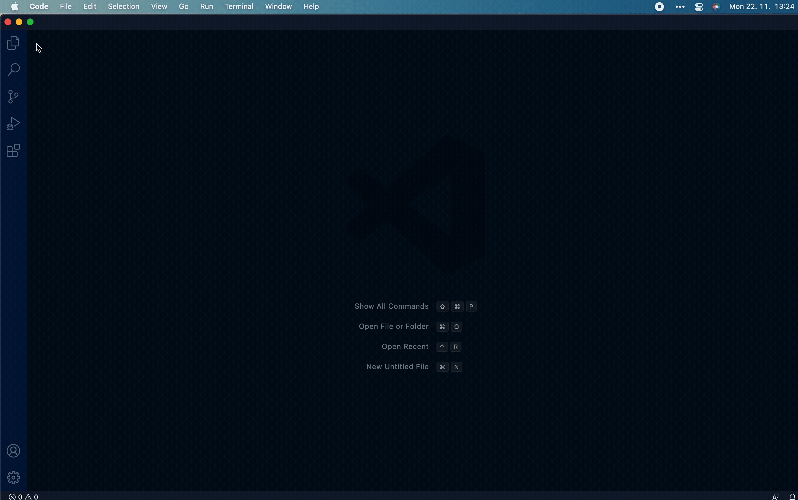
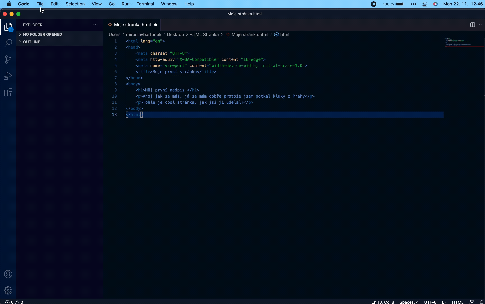

Nejprve si stáhenme prostředí, ve kterém HTML tvořime, což je VSC - Visual Studio Code, stáhnete si ho zde
Po nastavení samotného VSC, můžeme začít tvořit.
Na vytvoříme si nový soubor, najedeme na "File", poté klikneme na "New File" (Přesně jako na obrázku)
Po zvolení HTML můžeme začít tvořit. Každý dokument v HTML začíná doctypem, který vždy bývá na 1. řádku, v rámečku dole je zobrazen
 <!DOCTYPE html>Doporučuji místo psaní doctypu, napsat doc a zmáčknout tabulátor, to nám vypíše další dva potřebné příkazy: <head> a <body>, také nám to vypíše základní škálování na monitory
Head - Do headu píšeme třeba <title> což nám udělá název stránky v tabu
<title>HTML Tutorial</title>Nesmíme zapomenout <head> uzavřít </head>
Body - V body píšeme příkazy jako <p>, <h1> nebo jakéokoliv příkazy, které patří do body, neboli těla kódu. Stejně jako u <head>, zakončujeme </head>, zakončení bývá na posledních řádcích.
Pokud chceme psát kód v češtině, na 2. řádek musíme napsat tento příkaz
<html lang="cs">Pokud však kód cheme psát v angličtině, napíšeme pouze
<html lang="en">Po napsání těchto příkazů se nám zobrazí na posledním řádku zobrazí </html>, to vždy musí být poslední řádek, pod ním by nic nemělo být
Nyní jdeme na svůj první kód, začneme jednoduchým cvičením Hello World
Než začneme psát, musíme si vysvětlit jak psaní kódu v HTML funguje
Každý příkaz začíná < a končí />
<p> Takto vypíšeme jednoduchý řádek </p>Příkazem p uděláme jednoduchý řádek
Pak zde máme funkce jako h1,h2,h3,h4,h5,h6 - nadpisy
<h1> Takto zapíšeme h1, pokud cheme vybrat jinou hodnotu h, stačí přepsat 1 </h1>Když nyní víme, jak zapsat pár řádků, můžeme si napsat svůj první kus kód v HTML!
<h1>Můj první kód!</h1>
<p>Hello World</p>Gratuluji, právě jste vytvořili váš první nadpis a text v HTML. Teď se podíváme, jak si to vůbec zobrazíme.
Soubor si uložíme, buď najedeme na "File" a tam vybereme "Save", nebo jen zmáčkneme CTRL+S a nemusíme si práci komplikovat. Stránku si dle libosti pojmenujte
Doporučuji si na ploše udělat složku s názvem Web, tam najdeme jak samotnou stránku a nemusíme si poté komplikovat práci s vkládáním obrázků
Po vytvoření složky ve složce uvidíme naši stránku - pozor, stránka není na internetu, pouze je na vašem počítači, pokud stránku chcete sdílet kamarádům, musíte poslat soubor s kódem a s obrázky
Teď se podíváme, jak si do našeho webu vložíme obrázek
<img src = "nazevsouboru.koncovka">Obrázek jde samozřejmě zvětšit a zmenšit, stačí jen zadat style
Pozor! Obrázek musí být ve stejném adresáři jako je samotný kód (Ve stejné složce)
Formátování textu je důležitá součást stránky, design vždy udělá dojem o vaší firmě/stránce atd
Pro ty, co si chtějí udělat svoje stránky pro zveřejňování básní, doporučuji používat <br>
<p>When I fell asleep on the couch<br>I dreamt about Mr. Knopf<br>Mr. Knopf had a big ouch<br>Somebody gave him a big punch </p>Toto nám text zalomí, nemusíme proto vypisovat <p> a dělat další řádky
<p><b>Tento příkaz nám vypíše text tučňě</b></p>
<p><strong>Tento příkaz nám vypíše text tučně, je podobný příkazu, osobně ho píšu u důležitých částí textu <b> </strong></p>
<p><i>Tento příkaz nám vypíše text kurzívou </i></p>
<p><em>Tento příkaz nám text vypíše zdůrazněně, podobný příkazu "<i>" </em></p>
<p><small>Tento příkaz vypíše menší text</small></p>
<p><mark>Tento příkaz vypíše text zvýrazněně</mark></p>
<p><del>Tento příkaz vypíše text zaškrtnutě</del></p>
<p><ins>Tento příkaz vypíše text podškrtnutě</ins></p>
<p><sub>Tento příkaz vypíše text jako dolní index</sub></p>
<p><sup>Tento příkaz text vypíše jako spodní index</sup></p>Příkazy jdou samozřejmě do textu vkládat, pouze určená část textu bude ovlivněna daným příkazem
<p>Breathe, <strong>breathe</strong> in the air</p>V HTML můžeme svůj kód komentovat. Bude pouze vidět v kódu, ale ne na stránce
<!-- Zde pište svůj komentář -->V této kapitole se podíváme na CSS - Kaskádové Styly (Cascading Style Sheets)
Abychom si vytvořili CSS, musíme si vytvořit nový soubor, proces je uplně stejný jako u vytváření ale u vybírání programovacícho jazyku si vybereme CSS
Všechny stránky, co hezky vypadají CSS používají. Ano, i v HTML můžeme základně stránku designovat ale oproti CSS se nevyrovná.
Nyní se podíváme jak vložit nějaké CSS
p
{
color: blue;
text-align: center;
}
Tento kód nám změní všechny <p> - barva textu bude modrá a text bude zarovnán do středu
Abychom tyto změny viděli, musíme si CSS Soubor importovat. Nejpre si soubor musíme uložit do stejného adresáře, ve kterém máme uložený náš HTML kód
Doporučuji si CSS uložit pod názvem style.css
Po uložení souboru ho můžeme importovat
<link rel="stylesheet" href="style.css">Cokoliv, co teď napíšeme do CSS souboru bude zobrazeno na stránce
Pokud chceme styl upravit jenom kde chceme my a ne u všech <p>, musíme si udělat class v CSS
.cervena
{
color: red;
background-color: blue;
}
Nyní jsme udělali class "cervena"
Pokud ji budeme chtít v kódu uplatnit, musíme si class zavést
Můžeme to udělat přes div
<div class="cervena">
<h1>Ahoj, tento text bude červený a bude mít modré pozadí </h1>
<p>A tento text bude také červený a bude mít modré pozadí </p>
</div>
Text, který je v tomto divu, bude červený a pozadí textu modré
Jak centrovat div je dlouheltý vtip v této komunitě. My se podíváme, jak na to
.flex
{
display: flex;
justify-content: center;
align-items: center;
}
Jako předtím, tuto classu si přidáme do divu
<div class="flex">
<p>Jsem vycentrovaný!</p>
</div>
JavaScript je, jak název napovídá Script pro stránky - funkčnost stránek
JavaScript nemá nic společného s Javou, programovacím jazykem. Jediné, co společného mají je možná tak název, syntax je úplně jiný
Nyní se podíváme na základy JavaScriptu
Díky tomuto tutorialu si uděláte vaši první, základní stránku
Weby jsou z mého hlediska zábavná věc a jsou velmi důležité - každá firma má v dnešní době alespoň nějaké stránky
Pokud pochopíte základy, stránky jsou i celkem jednoduché
IT je budoucnost. Budoucnost se bez stránek neobejde, za mě se vyplatí HTMl, CSS a JavaScript ovládat